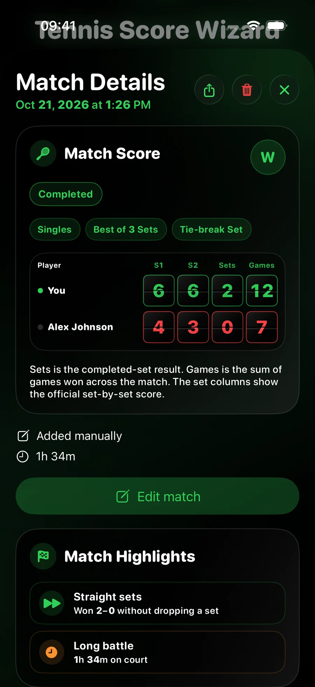

Centre d’aide
De votre premier point à l’histoire derrière le score. Commencez par le guide rapide, puis explorez le comptage, Time Machine, l’historique, les statistiques, Rivalries, le partage et la synchronisation privée. Les fonctions Watch sont disponibles dans les deux apps ; les fonctions iPhone nécessitent Pro.
Votre premier match, pas à pas
Quelques choix avant de jouer. Un toucher par point. Le reste suit.
Choisissez Pro pour le comptage sur Apple Watch et l’app compagnon sur iPhone en un seul achat. Choisissez Standalone pour une expérience sur Watch uniquement. Les deux incluent le comptage, Time Machine, l’historique, les bilans et les entraînements facultatifs sur Watch. Si vous possédez Pro, vous n’avez pas besoin d’acheter Standalone.
La version 2.0 nécessite watchOS 26 ou une version ultérieure sur Apple Watch ; Pro sur iPhone nécessite iOS 26 ou une version ultérieure. Le comptage en direct se fait sur Watch. Sur iPhone, Pro permet de revoir les matchs et d’ajouter des résultats après avoir joué : ce n’est pas un tableau de score iPhone en direct.
Ouvrez l’app Watch. Choisissez Simple ou Double, le format du match, la règle de set et la règle de jeu. Choisissez le premier serveur ou utilisez Pile ou face. Activez Enregistrer l’entraînement si vous le souhaitez, puis touchez Démarrer le match. Touchez la carte de score du camp qui gagne chaque point ; utilisez Annuler en cas d’erreur. L’app calcule les jeux, les sets et les jeux décisifs.
Non. Vous indiquez le gagnant du point d’un toucher. L’app actualise ensuite le score et les statistiques qui peuvent être déduites de ces points. Elle ne détecte ni les frappes, ni les aces, ni les coups gagnants, ni la longueur des échanges.
Dans Pro sur iPhone, ouvrez Rivalries et modifiez votre propre fiche joueur. Renseignez votre nom complet et un nom Watch plus court. Créez des profils d’adversaires dans Rivalries, puis laissez la liste se synchroniser avant d’en choisir un sur Watch. Le comptage en invité ne nécessite pas d’adversaire enregistré.
Aucun compte Tennis Score Wizard n’est nécessaire. Vous pouvez compter hors ligne et désactiver Enregistrer l’entraînement. Internet est nécessaire pour la synchronisation iCloud ; l’autorisation Santé ne sert qu’aux fonctions d’entraînement facultatives. Vérifiez la synchronisation avant de supprimer ou réinstaller l’app.
Votre dernière configuration est disponible pour le match suivant. Vérifiez les règles et le premier serveur avant de commencer ; vous pouvez les adapter à votre partie du jour.
Sur Watch, ouvrez Aide depuis la configuration. Dans Pro sur iPhone, ouvrez Matchs → Infos → Aide et guide. Les guides expliquent les commandes et la signification des chiffres.
Ajouter et modifier un match joué
Pro sur iPhone · Gardez le résultat connu à côté de votre historique Watch.
Dans l'onglet Matchs, touchez Ajouter un match joué. Choisissez Simple ou Double, saisissez un nom d'adversaire facultatif ou choisissez un joueur enregistré pour un simple, sélectionnez le format et saisissez les scores des sets. Touchez Enregistrer une fois les détails saisis.
Oui. Ouvrez les détails du match et touchez Modifier le match. Corrigez date, heure, durée, règles, scores des sets, points de tie-break ou statut Terminé/Arrêté. Enregistrer met à jour le match existant sans créer de copie ; Annuler le laisse inchangé. L'éditeur conserve le format Simple/Double et les joueurs. Utilisez les commandes distinctes d'attribution de l'adversaire et de contexte du match pour les modifier.
Oui. Un match manuel modifié met à jour le même enregistrement sur la Watch jumelée de Pro et peut se synchroniser avec Standalone via l'iCloud privé du même compte Apple. Gardez les apps à jour et laissez la synchronisation se terminer. Les statistiques concernées et les temps forts fondés sur l'historique utilisent le résultat corrigé.
Oui. Choisissez interrompu si le jeu s’est arrêté avant qu’un vainqueur soit déterminé par le format choisi. Saisissez le score atteint, y compris le set inachevé. Une égalité est acceptée. Choisissez terminé uniquement si le résultat désigne le vainqueur prévu par les règles.
Saisissez d’abord les jeux. Si le score correspond à un jeu décisif selon vos règles, par exemple 7–6, des champs supplémentaires apparaissent pour les points des deux joueurs. Remplissez les deux ou laissez-les tous deux vides. Pour un match tie-break décisif, saisissez directement les points, comme expliqué ci-dessous.
Pour remplacer le set décisif d’un match au meilleur des trois ou cinq sets, activez le match tie-break, choisissez 7 ou 10 points et saisissez les points dans la dernière ligne : par exemple 10–8, et non 1–0 en jeux. Si le match entier était un match tie-break, choisissez Match Tie-break comme règle de set. Un match tie-break terminé exige deux points d’écart.
Choisissez interrompu et indiquez le score à égalité qui a déclenché le jeu décisif, par exemple 6–6. Les champs permettent de saisir les points atteints à l’arrêt. Renseignez les deux valeurs si vous les connaissez, sinon laissez-les vides. L’app ne devine pas les points manquants.
Choisissez début et fin, puis les deux dates et heures : la durée se calcule automatiquement. Après minuit, indiquez le jour suivant pour la fin. Vous pouvez aussi choisir fin et durée et saisir des minutes. Si vous ne savez plus combien de temps vous avez joué, laissez la durée vide. Si elle est renseignée, elle doit être comprise entre une minute et 24 heures.
Ce formulaire enregistre un match déjà joué, pas un match prévu. La fin ne peut pas être dans le futur. Avec début et fin, le début doit précéder la fin.
Touchez une case directement ou utilisez Précédent et Suivant au-dessus du clavier. Le curseur ne saute pas après un chiffre, pour permettre les scores à deux chiffres. Terminé ferme le clavier ; toucher hors du champ ou faire défiler le masque aussi.
Le résultat enregistré, les sets, les jeux, les résultats de tie-break saisis et la durée facultative contribuent à l'historique et aux bilans concernés. Les mesures point par point, de service, de retour, de balles de break et d'entraînement apparaissent pour les matchs enregistrés sur Watch lorsqu'elles sont disponibles. Les matchs manuels portent la mention Ajouté manuellement.
Oui. Les saisies manuelles peuvent se synchroniser avec la Watch jumelée de Pro et avec Standalone via iCloud privé sous le même compte Apple. Les deux apps conservent la mention manuelle et masquent les statistiques indisponibles. Mettez les deux produits à jour et laissez la synchronisation se terminer.
Non. Ajouter un match joué est distinct de la modification d’un enregistrement Watch. Vous pouvez changer l’adversaire attribué et le contexte facultatif d’un match existant sans toucher à son score ni à ses statistiques.


Gardez le court et le match en mémoire
Tout est facultatif. Ajoutez le contexte lors de la saisie ou plus tard dans les détails sur iPhone.
La surface, le jeu en salle ou en extérieur, le lieu ou club, le nom ou numéro du court et une note privée propre au match. Vous pouvez aussi compléter d’anciens matchs Apple Watch.
Non. Les noms de lieux et de courts se saisissent à la main. Cette fonction ne recherche pas de courts sur une carte et n’enregistre pas votre position GPS.
Oui, depuis les courts récents et favoris. Les favoris sont stockés sur cet iPhone, séparément pour chaque compte Apple. Choisir un court remplit le lieu et les conditions, sans remplacer la note du match actuel. La liste des favoris elle-même n’est pas synchronisée par iCloud.
Les données du court et les notes accompagnent le résultat via les appareils jumelés et iCloud privé. Score et statistiques d’origine restent inchangés. Le contexte se consulte et se modifie sur iPhone ; la Watch le conserve pour la synchronisation, sans proposer d’éditeur.
Les conditions du court et le lieu renseignés. Les notes privées du match et des rivalités sont exclues. Vérifiez l’aperçu, surtout si vous ne souhaitez pas révéler le lieu.
Non. Surface, salle ou extérieur, lieu et notes décrivent les conditions de jeu. Ils n’affectent pas les temps forts et ne créent aucun record propre à une surface ou à un court.
Temps forts et partage
L’app propose 26 types d’événements, pas 26 cartes garanties par match. Les détails sur iPhone affichent tous les événements pertinents confirmés par les données. L’image partagée en présente jusqu’à six, les plus marquants en priorité. Sans événement correspondant, la section est absente.
Remontées, set décisif ou match tie-break, jeux décisifs serrés, résultats sans perdre de set, séries, paliers de victoires, records personnels et tendances au service ou au retour. Certains exigent des statistiques de points, d’autres sont justifiés par les sets et l’historique.
Non. Ils décrivent l'historique enregistré dans l'app. Ajouter un ancien résultat, corriger le score ou la date d'un match manuel, supprimer un match ou changer son adversaire peut modifier les comparaisons et les temps forts de rivalité. Les matchs ultérieurs ne servent pas d'antécédents à un résultat plus ancien. Les paliers de victoires reposent sur les victoires terminées répondant aux critères.
Les statistiques, Rivalries et les temps forts de séries utilisent les résultats départagés : victoires et défaites terminées, ainsi que les matchs interrompus avec une avance nette. Un match interrompu à égalité est neutre : il ne prolonge ni ne rompt une série. Un temps fort est évalué au moment de ce match dans son historique enregistré ; les statistiques montrent la série actuelle et la meilleure série pour l’historique et les filtres sélectionnés. Les caps de victoires terminées restent fondés uniquement sur les matchs terminés.
Non. Ils apparaissent dans les détails de Pro sur iPhone et les images partagées. L’historique Watch conserve résultat et statistiques disponibles, sans rubrique de temps forts.
Un score final ne prouve pas comment chaque point a été joué. Les matchs manuels peuvent montrer des événements confirmés par le score ou l’historique, mais l’app n’invente aucune donnée de service, retour, balles de break ou entraînement.
Match Flow et Momentum
Pro présente trois vues Match Flow dans les détails du match ; les deux applications pour la montre affichent un Momentum compact dans l’historique.
Uniquement lorsqu’un match enregistré dispose d’un suivi point par point valide. Les nouveaux matchs enregistrés sur la montre conservent automatiquement cette séquence. Certains matchs plus anciens contiennent déjà assez de données ; pour les autres et pour les résultats saisis manuellement, les points manquants ne peuvent pas être reconstitués à partir du score final. La section reste masquée sans données fiables.
Chaque barre représente un jeu enregistré : verte si vous l’avez gagné, rouge si votre adversaire l’a gagné. Une barre plus haute signifie que davantage de points ont été joués, et non que l’écart est plus grand. La case voisine indique le score cumulé après ce jeu. Les tie-breaks sont signalés séparément.
Scores présente le résultat cumulé après chaque jeu ainsi que le nombre de points enregistrés. Moments clés sélectionne les événements étayés par l’historique des points, comme un jeu long, un break ou un tournant du match. Pro affiche ces vues dans les détails du match ; l’historique de la montre montre le Momentum compact.
Non. Continuez à compter les points comme d’habitude. Match Flow utilise la séquence enregistrée, sans nouvelle commande sur le court ni geste supplémentaire.
Time Machine : retrouvez les points qui ont compté
Une relecture du score point par point, sans enregistrement vidéo et sans jamais modifier le match.
Revivez les points enregistrés et voyez qui servait, qui a gagné chaque point et comment les scores en points, jeux et sets ont évolué. Game Momentum situe le jeu sélectionné dans son contexte. Sur iPhone, Match Flow ajoute une vue de l’équilibre des points sur le match ; ce n’est pas une prédiction.
Sur Watch, ouvrez Menu → Time Machine pendant le jeu, ou ouvrez un match enregistré dans l’historique et choisissez Time Machine. Dans Pro sur iPhone, ouvrez un match enregistré et touchez Time Machine. Les deux apps Watch incluent la relecture ; la vue iPhone nécessite Pro.
Sur Watch, utilisez les flèches ou tournez la Digital Crown pour parcourir les points enregistrés. Sur iPhone, utilisez les flèches pour avancer point par point, ou faites glisser la chronologie du match pour aller plus loin. Les repères de sets vous aident à retrouver un set. Tournez l’iPhone en paysage pour élargir la vue.
MATCH START est la position précédant le premier point. POINT x / y indique le point sélectionné et le total enregistré. Le texte de l’événement nomme le gagnant du point, un point marque le serveur et les tuiles de score et de set suivent l’instant choisi.
Oui, sur Watch. La relecture en cours de match s’ouvre au dernier score. Revoyez les points précédents, puis fermez Time Machine pour revenir au tableau de score en direct. La relecture n’ajoute, ne supprime et ne modifie aucun point. Pour corriger une erreur de comptage, utilisez Annuler sur le tableau en direct.
La relecture exige une suite de points enregistrée exploitable. Un résultat final saisi manuellement ne contient pas cette suite. Certains matchs plus anciens ou reçus peuvent aussi manquer de l’historique nécessaire. L’app ne peut pas recréer des points qui n’ont jamais été enregistrés.
Un nouveau set n’a pas encore de point enregistré. Ses tuiles affichent des tirets jusqu’au début du jeu. D’autres colonnes de set apparaissent à mesure que le match les atteint ; un match terminé peut afficher des tirets dans les cartes de points principales tandis que les scores des sets terminés restent visibles.
Les petits nombres jaunes à côté du score en jeux d’un set ordinaire sont les points de jeu décisif de set enregistrés pour ce joueur. Ce ne sont pas des jeux supplémentaires. Un super jeu décisif final remplace un set et s’affiche séparément.
Partagez un match. Gardez une sauvegarde.
Pro sur iPhone propose des cartes à consulter, des fichiers de match réimportables et une sauvegarde distincte de votre historique.
Ouvrez le match et utilisez son menu de partage. Choisissez une carte de résultat, la carte de l’adversaire, une carte Match Flow ou un résumé textuel, selon disponibilité. Enregistrer dans Photos sauvegarde l’image choisie après l’autorisation éventuelle. Les images et le texte sont destinés à être consultés, pas importés en tant que matchs.
Choisissez Envoyer le match à un autre iPhone. Pro crée un instantané JSON du point de vue du destinataire, en inversant les camps et le résultat. Le déroulement des points enregistrés est inclus s’il est disponible. Les notes privées, le contexte du court, les données Santé et les liens vers la bibliothèque de joueurs sont omis. C’est une copie, pas un match partagé en direct ; certaines options ne sont pas disponibles pour les matchs reçus.
Dans Pro, ouvrez Matchs → Infos → Importer une sauvegarde ou un match partagé. Sélectionnez le fichier pris en charge, vérifiez l’aperçu et confirmez les nouveaux matchs à importer. Un score final seul ne peut pas fournir l’historique de points manquant.
Ouvrez Matchs → Infos → Match History Files → Exporter une copie. L’export utilise l’historique actuellement disponible sur iPhone, pas seulement le filtre de liste actif. Conservez un JSON ou un ZIP de sauvegarde complète dans un emplacement que vous contrôlez si vous voulez une copie réimportable.
CSV et Excel servent à l’analyse ; PDF est un rapport lisible. JSON conserve les données de match pour l’import. Le ZIP de sauvegarde complète comprend l’archive JSON, les fichiers CSV des matchs et des points, un classeur Excel, un rapport PDF et un guide. CSV, Excel, PDF et les images ne sont pas des formats d’import.
Les identifiants de match existants sont ignorés et les matchs supprimés le restent. L’import ajoute les données manquantes admissibles ; il n’écrase pas un match existant et ne crée pas de points ou de mesures d’entraînement manquants. Lisez le message de résultat avant de réessayer le même fichier.
Une image de match peut inclure les conditions du court et le lieu ; les notes privées de match et de joueur sont exclues. Une sauvegarde d’historique peut contenir des détails personnels de match et d’entraînement. Vérifiez le fichier ou l’image et choisissez soigneusement sa destination. Un instantané de match partagé contient volontairement moins d’informations personnelles qu’une sauvegarde.
Configurer un match
Choisissez le format et les règles correspondant à votre partie.
Choisissez Simple pour un joueur de chaque côté et Double pour deux joueurs de chaque côté. Le format est enregistré avec le match et utilisé également pour l’entraînement.
En Meilleur des 3, le premier camp à gagner deux sets remporte le match. En Meilleur des 5, il faut gagner trois sets.
Le set choisi constitue tout le match. Sa règle détermine toujours l’objectif de jeux et le tie‑break.
Choisissez la règle correspondant au format joué. Les sets traditionnels se jouent en six jeux, les Short Sets officiels en quatre, et Custom Set permet de définir chaque paramètre. L’app applique automatiquement la configuration complète.
Le premier à remporter quatre jeux gagne le set. Choisissez si le tie‑break commence à 3–3 ou 4–4, puis choisissez un tie-break normal à 7 avec deux points d'écart ou un tie-break à 5 avec point décisif à 4–4. La combinaison choisie s’affiche dans la configuration, le comptage en direct et l’historique.
No-Ad ne change que la règle du jeu. À égalité, le point suivant décide du jeu. Il peut se combiner aux formats de set disponibles sans modifier leur objectif de jeux ni leurs réglages de tie-break.
Custom Set permet de choisir l’objectif de jeux, l’écart requis, si et quand un jeu décisif commence, son objectif de points et son écart. Vous pouvez par exemple viser huit jeux. Le résumé réunit toutes les règles pour vérifier le format.
Non. Le format du match détermine le nombre de sets à gagner ; la règle du set, la façon dont chaque set normal se termine ; Standard ou No-Ad, la gestion de l’égalité dans un jeu ; et le Match Tie-Break optionnel remplace uniquement le dernier set décisif lorsque cette option est disponible.
Vous pouvez le sélectionner manuellement pendant la configuration ou utiliser le tirage au sort intégré.
Il produit un résultat aléatoire pour vous aider à choisir le premier serveur. Vous pouvez confirmer le résultat ou ajuster la configuration avant de commencer.
Lorsque cette option est activée et autorisée, un entraînement de tennis démarre avec le match. Les données disponibles de fréquence cardiaque, d’énergie active et de durée peuvent être enregistrées dans l’app Santé.
Compter les points d’un match
Enregistrez chaque point pendant que l’app gère automatiquement le score de tennis.
Utilisez les commandes pour indiquer si vous ou l’adversaire avez gagné le point. Le score est mis à jour immédiatement.
Un bref clic au son mécanique accompagne la saisie des points sur Watch et les changements de score dans Time Machine. C’est un retour sonore, pas un signal invitant à toucher de nouveau. Les touchers rapides ou une navigation rapide dans la relecture peuvent supprimer les clics répétés. Le comptage et la relecture fonctionnent même sans son.
Oui. Les points, jeux, sets, égalités, avantages et tie‑breaks progressent automatiquement selon les règles sélectionnées.
Avec Standard Game, 40–40 mène à l’égalité : un joueur doit obtenir l’avantage puis gagner le point suivant. Avec le No‑Ad, le point suivant décide directement du jeu.
Lorsque la règle choisie impose un tie-break, l'app passe des points habituels du tennis à des points numériques de tie-break et détermine le vainqueur selon la règle configurée.
Un Match Tie-Break remplace le dernier set décisif. À un set partout au meilleur des 3 ou deux sets partout au meilleur des 5, ouvrez Menu avant le début du set décisif et choisissez Match Tie-Break. Sélectionnez À 7 ou À 10. Le vainqueur doit atteindre l'objectif avec deux points d'écart. Il fonctionne en Simple et en Double et figure dans l'historique, les détails du match, les statistiques et les cartes partagées.
Un tie‑break de set décide un seul set, généralement à 6–6, enregistré 7–6. Le tie‑break décisif remplace l’intégralité du set décisif et apparaît séparément, par exemple [10–7].
La balle de tennis se trouve dans un indicateur de côté bordé de blanc. À votre service, elle marque votre côté de service gauche ou droit. Au service de l’adversaire, la vue reste celle de votre fond de court : sa droite est à votre gauche, et inversement. La carte de score du serveur est bordée de vert. En No-Ad à 40–40, l’indicateur de côté du court est masqué car le relanceur choisit le côté.
Le serveur change automatiquement au fil des jeux et des points de tie‑break. Si l’affichage ne correspond plus au match réel, vous pouvez le corriger dans le menu.
L’app affiche un rappel aux changements de côté appropriés. Ce message est informatif et disparaît lorsque le jeu reprend.
Commandes du match
Corrigez une erreur, gérez le match en cours et arrêtez proprement une partie inachevée.
Annuler retire le dernier point et restaure l’état précédent : points, jeux, sets, serveur, côté de service, tie‑break et statistiques associées.
Pendant le jeu, Menu donne accès à Time Machine, Changer de serveur, Historique et aux actions de fin de match. Terminer le match enregistre une partie inachevée comme Interrompu. Configurer un nouveau match enregistre le jeu inachevé déjà saisi avant de revenir à la configuration ; un match vide est abandonné. Vérifiez tout avertissement d’enregistrement et utilisez Réessayer lorsque cela vous est proposé.
Utilisez cette action lorsque le serveur affiché ne correspond pas au match réel. Elle corrige le côté au service sans modifier le score.
Un match inachevé peut être enregistré avec son score actuel, sa durée, les sets terminés, le set en cours, les points et les statistiques disponibles. Il reste marqué « Arrêté » dans l’historique. Si un camp menait, le résultat compte aussi dans le bilan, le taux de victoires et les séries ; à égalité, il reste neutre.
Une session de comptage vide est abandonnée au lieu d’être ajoutée comme match joué. L’enregistrement de l’entraînement est distinct et dépend des données recueillies. Vérifiez tout message de récupération ou d’enregistrement avant de quitter.
Oui. Une fois le match actuel terminé ou arrêté, vous pouvez revenir aux réglages et en commencer un autre en réutilisant la configuration précédente.
Utilisez Annuler dès que possible. Cela restaure l'état complet antérieur au point erroné et évite de tenter de compenser en accordant un autre point.
Adversaires et rivalités
Choisissez sur Apple Watch un adversaire enregistré pour un simple et construisez automatiquement un bilan privé en face-à-face.
Ouvrez Rivalités dans Pro sur iPhone. Saisissez-y le nom complet et un nom court pour la Watch. Ce dernier est limité à 16 caractères afin de rester lisible pendant la configuration et le match. Standalone sur Apple Watch peut ensuite choisir les adversaires synchronisés, mais ne permet pas de créer ni de modifier les profils.
Dans Rivalités sur iPhone, effectuez un appui prolongé sur la fiche du joueur, choisissez « Supprimer le joueur », puis confirmez. Les matchs attribués restent dans l’historique mais ne sont plus liés à ce joueur. Vous pourrez les attribuer à un autre joueur plus tard.
Choisissez Simple pendant la configuration, ouvrez Adversaire, puis sélectionnez Invité ou un joueur enregistré. Un match Invité est enregistré normalement sans être ajouté à une rivalité. En double, aucun adversaire unique n’est attribué au match par équipes.
Le face-à-face utilise les matchs de simple au résultat départagé attribués à ce joueur. Les matchs terminés et les matchs interrompus avec un joueur clairement en tête comptent dans le bilan ; un match interrompu à égalité reste neutre. Lorsque les données existent, le profil peut aussi afficher sets, jeux, tie-breaks, points, service et retour, balles de break, temps, entraînements et liste des rencontres.
La vue compare votre taux de victoires sur les cinq dernières rencontres au résultat départagé à celui de toute la période sélectionnée. S’il y en a moins de cinq, elle utilise les rencontres disponibles. Le résultat suit le filtre Toute la période, Cette année ou 30 derniers jours.
Il s’agit d’un match au résultat départagé que vous avez gagné après avoir perdu le premier set terminé. Le détail indique combien de victoires de ce type vous avez enregistrées et combien de matchs admissibles ont commencé par la perte du premier set. Par exemple, 2 sur 5 signifie deux victoires en cinq matchs admissibles, et non deux essais sur une limite arbitraire.
La série actuelle est la dernière suite ininterrompue de victoires ou de défaites dans des matchs au résultat départagé. La meilleure série est la plus longue suite de victoires dans la période sélectionnée.
Oui. Ouvrez le match de simple enregistré sur l’iPhone, touchez « Attribuer » dans la section Adversaire et choisissez le joueur. Vous pouvez ensuite modifier ou supprimer l’attribution sans changer le score ni les statistiques. La mise à jour est envoyée à l’historique Pro de l’Apple Watch jumelée et à Standalone par la synchronisation iCloud privée.
L’app vérifie les noms complets et les noms Watch lors de la création d’un joueur et conserve le même profil sur les appareils. Si un joueur n’apparaît pas encore sur Watch, vérifiez la synchronisation avant de le recréer.
Non. Elles restent dans le profil et sont exclues du texte et des cartes partagés. Les cartes utilisent le filtre de période actif et conservent un ordre fixe : bilan et rencontres récentes, performance du match, puis tendances et contexte d’entraînement.
Comprendre les chiffres de votre tennis
Les statistiques proviennent des informations que vous enregistrez. Une donnée manquante est indisponible, pas égale à zéro.
M est le nombre de matchs enregistrés correspondant aux critères. W compte les victoires, y compris les matchs interrompus alors que vous meniez. L compte les défaites, y compris les matchs interrompus alors que vous étiez mené. T désigne les résultats nuls, pas les jeux décisifs. WR correspond à W ÷ (W + L), en pourcentage ; les résultats nuls sont exclus. Les totaux Watch couvrent aussi les données correspondantes au-delà de la première page.
Non. Le pourcentage de points gagnés divise les points gagnés par les points joués. Le pourcentage de matchs gagnés utilise les résultats de match départagés. Les pourcentages globaux utilisent les totaux admissibles et non la moyenne des pourcentages de chaque match.
Ouvrez Statistiques, choisissez Vue d’ensemble ou Tendances, puis utilisez le bouton de filtre pour sélectionner une période et un type de match. Les chiffres et les statistiques partagées suivent ces filtres. Touchez le bouton d’information d’une section pour les définitions et consultez ses notes de couverture.
Jeux de service gagnés mesure les jeux gagnés sur votre service ; Points de service gagnés mesure les points gagnés sur votre service. Jeux de retour gagnés mesure les jeux gagnés à la réception ; Points de retour gagnés mesure les points gagnés sur le service adverse. Par exemple, 6/8 signifie six gagnés sur huit. Le taux de conservation du service mesure les jeux de service gagnés ; le taux de break mesure les jeux de retour gagnés.
Une balle de break est une occasion pour le relanceur de gagner le jeu. Concédées compte les occasions contre vous sur votre service ; Sauvées compte celles que vous avez défendues. Occasions compte vos chances en retour ; Converties compte celles transformées en jeu gagné. Les points de jeu décisif ne sont pas des balles de break.
Les jeux enregistrés sont ceux qui contiennent des données de points et peuvent inclure un jeu inachevé dans un match interrompu : ce n’est donc pas le score officiel en jeux. Jeu le plus long et Moyenne de points par jeu mesurent des points, pas des minutes, des frappes ou la longueur des échanges. Le temps sur le court utilise la durée enregistrée.
Les bilans des jeux décisifs comptent les jeux décisifs terminés gagnés et perdus. Les statistiques de super jeux décisifs décrivent les jeux décisifs finaux enregistrés, avec des bilans par objectif de points si disponibles. Les victoires après remontée sont des matchs terminés gagnés après la perte du premier set terminé. Les séries suivent les résultats départagés consécutifs ; un match interrompu à égalité est neutre.
Chaque point du graphique combine ce match avec jusqu’à quatre matchs précédents contenant la mesure choisie, puis recalcule le pourcentage à partir de leurs totaux. L’évolution glissante compare les cinq derniers matchs admissibles aux cinq précédents, sans chevauchement ; elle exige au moins dix matchs et s’exprime en points de pourcentage. Le graphique affiche jusqu’aux 24 derniers matchs admissibles dans vos filtres.
Votre entraînement enregistré, pas celui de votre adversaire. L’énergie totale en activité additionne les entraînements enregistrés ; la fréquence cardiaque moyenne est pondérée par la durée du match, et la fréquence maximale est le maximum enregistré le plus élevé. L’accès à Santé et des mesures disponibles sont nécessaires.
Les résultats manuels, les anciens enregistrements et les fichiers de match reçus peuvent contenir moins d’informations. Différentes mesures peuvent utiliser différents matchs admissibles. L’absence de données de points ou de Santé ne compte pas comme zéro, et aucune fonction ne peut recréer des mesures jamais enregistrées.
Oui. Annuler rétablit le score précédent, le serveur et les compteurs associés. Corriger un résultat manuel peut actualiser les bilans permis par ce résultat, mais ne crée pas de données point par point.
Synchronisation entre Pro et l’iPhone
Pro comprend l’application complète de suivi du score sur Apple Watch et l’analyse des matchs sur iPhone. Vous n’avez pas besoin d’acheter Tennis Score Wizard (Standalone) séparément.
Comptez les points sur l’Apple Watch, puis consultez sur l’iPhone l’historique, les résultats, les statistiques et les données d’entraînement synchronisés.
Configuration et score en direct restent sur Apple Watch. Sur iPhone, Pro permet de saisir les résultats joués, modifier le contexte, consulter les matchs et partager les temps forts. La saisie manuelle n’est pas un tableau de score en direct sur iPhone.
L’iPhone affiche dernier résultat et historique, dont les matchs manuels, scores des sets et jeux décisifs, contexte facultatif et temps forts justifiés. Les matchs Watch peuvent aussi inclure statistiques de points, service, retour, balles de break, déroulement et bilans d’entraînement.
Pro peut transférer les matchs enregistrés directement entre la Watch jumelée et l’iPhone. La synchronisation iCloud privée relie séparément l’historique sous le même compte Apple, y compris avec Standalone. Dans Infos sur iPhone, Synchronisation Watch et Historique des matchs iCloud ont des états et des dates de dernière synchronisation distincts. L’une peut se terminer avant l’autre sans créer de doublon.
Oui. L'attribution de l'adversaire fait partie du match enregistré. Pro peut transmettre la mise à jour directement à son Apple Watch jumelée et la synchronisation iCloud privée peut la transmettre à Standalone lorsque les apps utilisent le même compte Apple. Gardez les apps disponibles quelques instants si la mise à jour n'est pas encore apparue.
Vérifiez que la bonne Apple Watch est jumelée, gardez les deux appareils à proximité et ouvrez Tennis Score Wizard sur Apple Watch et iPhone. Vérifiez aussi qu'ils utilisent le compte Apple souhaité et consultez l'état iCloud dans l'historique. Le match enregistré reste protégé localement pendant l'attente et peut se synchroniser dès que la connexion entre appareils jumelés ou iCloud est disponible.
Lorsque les données d'entraînement sont disponibles, Pro peut afficher la durée du match, la fréquence cardiaque moyenne et maximale et l'énergie active avec le match enregistré sur les deux appareils.
Supprimer un match ou utiliser Tout supprimer transmet la suppression à la Watch et via la synchronisation iCloud disponible. Tout supprimer concerne l’historique entier, pas seulement la recherche ou le filtre en cours. Confirmez avec soin : la suppression est irréversible et l’import ne restaure pas les identifiants de match supprimés. Exportez d’abord une sauvegarde si vous souhaitez une copie séparée.
Synchronisation et restauration via iCloud
Synchronisez les matchs enregistrés entre Standalone et Pro sans créer de compte Tennis Score Wizard.
Assurez-vous que l’Apple Watch et, avec Pro, l’iPhone utilisent le même compte Apple. Activez iCloud Drive, conservez une connexion à Internet et laissez la première synchronisation se terminer. Vous pouvez continuer à compter les points sans iCloud.
Oui. Les deux versions utilisent le même stockage iCloud pour les matchs enregistrés. Avec le même compte Apple, un match enregistré dans Standalone peut apparaître dans Pro et inversement.
Ouvrez l’Historique et consultez la ligne iCloud. Synchronisé signifie que la dernière synchronisation a réussi et en affiche la date et l’heure. Synchronisation en cours signifie que la synchronisation est active. En attente avec Enregistrement en cours signifie qu’une modification locale est placée en toute sécurité dans la file d’attente iCloud. Synchronisation en pause avec Réessayer signifie que la dernière tentative n’a pas pu aboutir ; touchez la ligne pour réessayer.
Chaque compte Apple possède son propre historique de matchs privé dans CloudKit. Les historiques de comptes différents restent séparés et ne sont pas fusionnés. Lorsque l’app détecte un changement, elle affiche l’historique local et iCloud du compte Apple actuel ; si vous revenez au compte précédent, son historique réapparaît après la synchronisation. Avant que le cache local du compte précédent soit supprimé de cet appareil, les matchs encore en attente de synchronisation sont conservés dans une copie de récupération chiffrée liée à ce compte. Ils ne sont pas envoyés vers le nouveau compte, et changer de compte ne supprime aucun enregistrement déjà stocké dans la base de données iCloud de l’un ou l’autre compte.
Oui, s’ils ont été correctement synchronisés avant la suppression de l’app. Vérifiez d’abord que l’Historique affiche Synchronisé. Après la réinstallation, utilisez le même compte Apple, gardez iCloud Drive activé, ouvrez l’app et laissez les matchs se télécharger.
Non. Supprimer l’app n’efface pas automatiquement les matchs déjà synchronisés avec iCloud. Ils peuvent être téléchargés de nouveau après la réinstallation. Si vous supprimez des matchs dans Tennis Score Wizard, ces suppressions sont synchronisées dès qu’iCloud est disponible.
Non. CloudKit stocke les enregistrements synchronisés dans la base de données privée de votre compte Apple. Par défaut, seul cet utilisateur peut accéder à la base de données privée.
Santé et entraînements
Enregistrez votre séance de tennis et comprenez les données de santé affichées après le match.
Activez « Enregistrer l’entraînement » lors de la configuration et accordez les autorisations Santé. L’entraînement commence avec le match et se termine lorsque celui-ci est fini ou arrêté.
Pendant un entraînement, la fréquence cardiaque actuelle apparaît lorsque Health est autorisé et que l’Apple Watch fournit un échantillon disponible.
La moyenne résume les échantillons disponibles pendant l’entraînement. La valeur maximale correspond à la mesure la plus élevée enregistrée.
L'énergie active est l'estimation de l'énergie dépensée par l'activité pendant l'entraînement. Apple Watch l'estime à partir des données de santé et de mouvement disponibles ; l'app affiche le total de l'entraînement fourni par HealthKit.
Après une fin réussie, il est enregistré dans l’app Santé et peut également apparaître dans l’app Forme d’Apple, selon les autorisations et la synchronisation.
Certaines mesures sont finalisées par Santé après la fin de l’entraînement. Attendez un court moment pour le traitement et la synchronisation, puis rouvrez le match.
L’autorisation peut être absente, le capteur peut avoir fourni trop peu d’échantillons, l’entraînement peut avoir été désactivé ou Health peut encore traiter les données.
Oui. Le score et l’historique sont indépendants de l’app Santé. Un problème d’autorisation ou de données d’entraînement n’empêche pas l’enregistrement du match.
Historique des matchs
Retrouvez les matchs enregistrés par année et par mois sur Apple Watch, puis consultez leur résultat en notation de tennis compacte.
Dans History, touchez Period, choisissez une année, puis un mois ou Entire year pour l’année entière. Seuls les années et mois contenant des matchs enregistrés sont proposés. All dates efface la période ; All, 1v1 et 2v2 filtrent le type de match. Ces commandes existent dans Pro et Standalone.
Non. Il affiche d’abord 50 résultats correspondants, puis charge les plus anciens par groupes de 50. Vous pouvez aussi toucher Load older matches. Le récapitulatif porte sur tous les résultats correspondants, pas seulement sur la première page. La liste des périodes couvre tout l’historique enregistré ; les anciens matchs ne sont pas supprimés.
Win signifie que vous avez gagné le match terminé aux sets. Loss signifie que l’adversaire a gagné le match terminé aux sets.
Le match a été enregistré avant sa fin normale. Le contexte réel enregistré jusqu’à cet instant est conservé. Un match arrêté avec un leader compte dans le bilan, le taux de victoires et les séries ; un match arrêté à égalité reste neutre.
S1 à S5 désignent les sets 1 à 5. Un résultat terminé ou interrompu peut présenter un à cinq sets classiques. Par exemple, S1 6–3 indique que le premier set s’est terminé à six jeux contre trois.
Non. Un résultat de set comme 7–6 compte les jeux. Ses petits indices jaunes montrent les points de jeu décisif enregistrés séparément pour chaque joueur. TB est l’abréviation de tie-break, ou jeu décisif, dans un libellé de règle ou d’état.
Le petit nombre est un score de jeu décisif de set. Dans la ligne de résultat compacte, 7–66 signifie que le camp perdant a marqué six points au jeu décisif ; le gagnant en a atteint au moins huit. Les tuiles de chaque set peuvent montrer les points de jeu décisif enregistrés des deux joueurs. Les indices des jeux décisifs de set ordinaires sont sans parenthèses ; un super jeu décisif final reste séparé entre crochets, par exemple [10–7].
L’app compare d’abord les sets terminés. En cas d’égalité, elle compare les jeux terminés dans le set en cours inachevé. Les points d’un jeu ou d’un jeu décisif inachevé ne déterminent pas qui mène le match. Les jeux des sets précédents ne s’additionnent pas. Si les sets et les jeux du set en cours sont à égalité, le résultat interrompu est Nul. Une avance nette compte comme une victoire ou une défaite dans les statistiques et les séries ; le match garde son étiquette Interrompu.
Si le set en cours a déjà commencé, son état est enregistré avec le match, par exemple « S3 0–1.
Un match peut contenir format, résultat, scores des sets et jeux décisifs, horaires et adversaire. Les saisies manuelles sont identifiées. Sur iPhone, vous pouvez ajouter conditions du court, lieu et note privée. Les statistiques de points et d’entraînement ne figurent que si elles ont été enregistrées, jamais déduites d’un score manuel.
L'historique affiche le nom lisible du format et les règles pertinentes : objectif de jeux, écart requis pour gagner, début et objectif du tie-break. Les lignes compactes gardent l'essentiel visible ; les détails du match présentent la configuration complète.
Les points du jeu décisif se placent à côté du score des jeux. Les cases peuvent s’élargir pour les jeux à deux chiffres afin de garder les nombres séparés. Le match tie-break décisif s’affiche à part entre crochets, par exemple [10–7]. Le texte partagé inclut aussi le résultat complet.
Oui. Utilisez la commande de suppression dans l'historique et confirmez. Supprimer un match retire cet enregistrement de l'app.
Votre mois, votre année et toute votre histoire de tennis
Découvrez votre histoire au fil du temps, puis les matchs qui la composent.
Dans l’une ou l’autre des apps Watch, ouvrez Historique. Sous Toutes les dates, choisissez All Time in Tennis. Sélectionnez une année ou un mois dans Période pour ouvrir Year in Tennis ou Month in Tennis. Dans Pro sur iPhone, ouvrez Calendrier et le bilan du mois ou de l’année sélectionnés ; utilisez Toute la période dans Statistiques pour les statistiques globales.
Cette vue réunit l’activité, les résultats et les réussites de votre historique enregistré. Sur Watch, balayez horizontalement le graphique annuel pour parcourir un écran d’années à la fois. La Digital Crown fait défiler la page verticalement. Touchez une réussite pour voir son détail et, si disponible, le match correspondant.
La hauteur des barres représente le nombre de matchs enregistrés, pas leur durée. Le vert indique les victoires, le rouge les défaites et le jaune les résultats nuls. Les matchs interrompus avec une avance nette comptent comme victoires ou défaites ; un match interrompu à égalité compte comme nul. Le nombre au-dessus d’une barre est son total de matchs.
Les semaines suivent le calendrier de votre appareil : un mois peut donc chevaucher cinq ou six semaines. Les comparaisons hebdomadaires exigent deux semaines complètes. Les comparaisons mensuelles et annuelles utilisent la période précédente si l’historique est comparable ; une période en cours est comparée jusqu’au même point de chaque période.
Ils décrivent les matchs enregistrés dans l’app, pas un palmarès vérifié indépendamment. Ajouter, modifier ou supprimer l’historique peut changer les records concernés. Ouvrez une réussite pour consulter le match qui la justifie, lorsqu’il est disponible.
Dans Pro sur iPhone, utilisez Partager dans le bilan mensuel ou annuel pour créer sa carte. Les deux apps Watch proposent l’activité et les réussites des bilans au poignet ; la Watch ne dispose pas des outils de partage de l’iPhone.
Soutien facultatif au développement
Un soutien ponctuel contribue aux futures évolutions, mais ne déverrouille aucune fonction et ne modifie pas l’app.
Non. Les pourboires Apple et le soutien en cryptomonnaie sont facultatifs. Toutes les fonctions restent disponibles selon le produit acheté, avec ou sans contribution.
Choisissez un montant ponctuel dans Infos → Soutenir le développement, puis confirmez-le dans la fenêtre d’achat Apple. Apple traite le paiement avec le moyen associé à votre compte App Store.
Vérifiez dans votre portefeuille la devise, le réseau et l’adresse de destination complète. Les transferts blockchain sont généralement irréversibles. Tennis Score Wizard n’associe aucune donnée de match, de rivalité, d’entraînement ou de Santé à la transaction.
Complications de cadran Apple Watch
Accédez rapidement à Tennis Score Wizard depuis un cadran compatible.
Elle agit comme un raccourci. Touchez-la pour ouvrir Tennis Score Wizard sur l’Apple Watch.
Tennis Score Wizard prend en charge les emplacements circulaires et d’angle pour les complications sur les cadrans Apple Watch compatibles.
Modifiez un cadran compatible sur l’Apple Watch ou dans l’app Watch de l’iPhone, choisissez un emplacement pris en charge, puis sélectionnez Tennis Score Wizard.
Vérifiez que l’app est installée sur l’Apple Watch et que l’emplacement choisi prend en charge une famille compatible. Les emplacements disponibles varient selon le cadran.
Apple Watch définit la forme et l’espace de chaque emplacement. Tennis Score Wizard adapte automatiquement son raccourci à la présentation circulaire ou en coin.
Dépannage
Vérifications courantes lorsque le score, les données d’entraînement ou l’accès depuis le cadran ne fonctionnent pas comme prévu.
Vérifiez que l’entraînement est activé, que Health est autorisé et que la montre est correctement portée. La valeur apparaît uniquement lorsqu’un échantillon est fourni par l’Apple Watch.
Attendez le traitement, vérifiez les autorisations et confirmez que l’enregistrement était activé. Assurez-vous également d’avoir terminé ou arrêté le match correctement.
Rouvrez le match après avoir laissé à Santé le temps de finaliser l’entraînement. Une valeur peut rester indisponible si les données sources sont insuffisantes.
Ouvrez le menu et utilisez « Changer de serveur ». Cette action corrige le côté au service sans modifier le score.
Utilisez Annuler pour restaurer l’état précédent, y compris le score, le serveur, le tie‑break et les statistiques associées.
Essayez un emplacement circulaire ou d’angle. Tous les emplacements de tous les cadrans ne prennent pas en charge le même type de complication.
Ouvrez d’abord l’Historique et vérifiez que la ligne iCloud affiche Synchronisé. Après la réinstallation, utilisez le même compte Apple avec iCloud Drive activé et laissez la restauration se terminer. Les matchs qui n’ont jamais terminé une synchronisation iCloud restent uniquement sur l’appareil d’origine.
En attente avec Enregistrement en cours signifie qu’une modification locale est en attente et pourra être envoyée dès qu’iCloud sera disponible. Si Synchronisation en pause avec Réessayer, vérifiez que l’appareil est connecté au compte Apple souhaité, qu’iCloud Drive est activé, que le réseau est disponible et que le stockage iCloud n’est pas plein, puis touchez la ligne d’état. Les matchs locaux ne sont pas supprimés simplement parce qu’iCloud est indisponible.
Assistance
Besoin d’aide ou envie de suggérer une fonctionnalité ?
Contact : tennisscorewizard@gmail.com